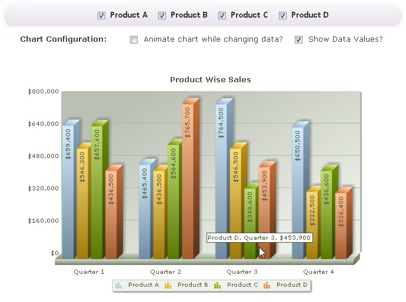

| FusionCharts XT and JavaScript - Example Application |
In this section, we are going to create a simple application to demonstrate the integration of FusionCharts XT and JavaScript. Our application will be completely built in HTML using HTML, JavaScript and FusionCharts. We recommend that you please go through the previous topics in this section, if you have not already gone through them. This example uses a lot of concepts explained in previous topics. Our application will look as under once we are done: |
| 
See it live |
| The code for this application is present in Download Package > Code > JavaScript > ExampleApplication folder. |
| Application Description |
As you can see in the image above:
Before we get to the code of the application, let us first see the process flow. |
| Process Flow |
The process flow for this application can be enlisted as under:
Let us now see the code for this application. We have used the simple event model and simple functions to build this application. |
| Code |
The code for the above application is present in Chart.html and can be listed as under: |
<HTML> <HEAD> <TITLE>FusionCharts XT - Client Side Chart Plotting</TITLE> <SCRIPT LANGUAGE="Javascript" SRC="../../FusionCharts/FusionCharts.js"></SCRIPT> <SCRIPT LANGUAGE="JavaScript"> //In this example, we'll show you how to plot and update charts on the //client side. Here, we first store our data (to be plotted) in client side //JavaScript arrays. This data is hard-coded in this example. However, //in your applications, you can build this JavaScript arrays with live //data using server side scripting languages. Or, you can make AJAX calls //to get this data live. //We store all our data in an array data. It contains data for three Products //for 3 quarters. The first column of each array contains the product Name. //Thereafter 4 columns contain data for 4 quarters. var data = new Array(); //Data for each product data[0] = new Array("Product A",659400,465400,764500,650500); data[1] = new Array("Product B",546300,436500,546500,332500); data[2] = new Array("Product C",657600,564600,348600,436600); data[3] = new Array("Product D",436500,765700,453900,326400); //Flag indicating whether our chart has loaded var chartLoaded = false; /** * FC_Rendered method is invoked when the chart has completed rendering for the first time. * It's a pre-defined method name. * @param domId Dom ID of the chart object */ function FC_Rendered(domId){ //It is in this method that you can update chart's data using JS methods. //Check if this is the chart that we want to update if (domId=="chart1Id"){ //Yes - it is. //Enable the form now, as the chart has loaded this.document.productSelector.disabled = false; //Set chartLoaded flag to true chartLoaded = true; //Get reference to chart object using Dom ID var chartObj = getChartFromId(domId); //Update its XML - set animate Flag to true chartObj.setXMLData(generateXML(true)); } return true; } /** * updateChart method is called, when user changes any of the checkboxes. * Here, we generate the XML data again and build the chart. * @param domId domId of the Chart */ function updateChart(domId){ //Update only if chart has loaded if (chartLoaded){ //Get reference to chart object using Dom ID var chartObj = getChartFromId(domId); //Update its XML - set animate Flag from AnimateChart checkbox in form chartObj.setXMLData(generateXML(this.document.productSelector.AnimateChart.checked)); } } /** * generateXML method returns the XML data for the chart based on the * checkboxes which the user has checked. * @param animate Boolean value indicating to animate the chart. * @return XML Data for the entire chart. */ function generateXML(animate){ //Variable to store XML var strXML; //<chart> element //Added animation parameter based on animate parameter //Added value related attributes if show value is selected by the user strXML = "<chart caption='Product Wise Sales' formatNumberScale='0' numberPrefix='$' animation='" + ((animate==true)?"1":"0") + "' " + ((this.document.productSelector.ShowValues.checked==true)? (" showValues='1' rotateValues='1' placeValuesInside='1' "):(" showValues='0' ")) + ">"; //Store <categories> and child <category> elements strXML = strXML + "<categories><category label='Quarter 1' /><category label='Quarter 2' /><category label='Quarter 3' /> <category label='Quarter 4' /></categories>"; //Based on the products for which we've to generate data, generate XML strXML = (this.document.productSelector.ProductA.checked==true)?(strXML + getProductXML(0)):(strXML); strXML = (this.document.productSelector.ProductB.checked==true)?(strXML + getProductXML(1)):(strXML); strXML = (this.document.productSelector.ProductC.checked==true)?(strXML + getProductXML(2)):(strXML); strXML = (this.document.productSelector.ProductD.checked==true)?(strXML + getProductXML(3)):(strXML); //Close <chart> element; strXML = strXML + "</chart>"; //Return data return strXML; } /** * getProductXML method returns the <dataset> and <set> elements XML for * a particular product index (in data array). * @param productIndex Product index (in data array) * @return XML Data for the product. */ function getProductXML(productIndex){ var productXML; //Create <dataset> element productXML = "<dataset seriesName='" + data[productIndex][0] + "' >"; //Create set elements for (var i=1; i<=4; i++){ productXML = productXML + "<set value='" + data[productIndex][i] + "' />"; } //Close <dataset> element productXML = productXML + "</dataset>"; //Return return productXML; } function toggleValues(chartId) { // get chart reference var chartReference = FusionCharts(chartId); // toggle present showValues status var toggledShowValues = 1* ( !( chartReference.getChartAttribute("showValues")==1 ) ); // set toggled value for showValues chartReference.setChartAttribute( "showValues" , toggledValue ); } </SCRIPT> </HEAD> <BODY> <!-- In this example, we'll initially plot the chart with no data. --> <!-- Embed a chart --> <!-- Create the form for selecting products. We disable the form till the chart is loaded and initialized. --> <FORM NAME='productSelector' Id='productSelector' action='Chart.html' method='POST' disabled> <h4>Please select the products for which you want to plot the chart:</h4> <INPUT TYPE='Checkbox' name='ProductA' onClick="JavaScript:updateChart('chart1Id');" checked> Product A <INPUT TYPE='Checkbox' name='ProductB' onClick="JavaScript:updateChart('chart1Id');" checked> Product B <INPUT TYPE='Checkbox' name='ProductC' onClick="JavaScript:updateChart('chart1Id');" checked> Product C <INPUT TYPE='Checkbox' name='ProductD' onClick="JavaScript:updateChart('chart1Id');" checked> Product D <B>Chart Configuration:</B> <INPUT TYPE='Checkbox' name='AnimateChart'>Animate chart while changing data? <INPUT TYPE='Checkbox' name='ShowValues' onClick="JavaScript:toggleValues('chart1Id');" checked>Show Data Values? </FORM> <div id="chart1div">FusionCharts XT</div> <script language="JavaScript"> var chart1 = new FusionCharts("../../FusionCharts/MSColumn3D.swf", "chart1Id", "600", "400", "0", "1"); //Initialize chart with empty data. We'll feed it data on the chart's FC_Rendered event. chart1.setXMLData("<chart></chart>"); chart1.render("chart1div"); </script> </BODY> </HTML> |
As you can see above, we are first rendering the FORM. This form allows the user to select the products which they want to plot on the chart. We also present some chart configuration options in the same form: |
<FORM NAME='productSelector' Id='productSelector' action='Chart.html' method='POST' disabled>
<INPUT TYPE='Checkbox' name='ProductA' onClick="JavaScript:updateChart('chart1Id');" checked> Product A
<INPUT TYPE='Checkbox' name='ProductB' onClick="JavaScript:updateChart('chart1Id');" checked> Product B
<INPUT TYPE='Checkbox' name='ProductC' onClick="JavaScript:updateChart('chart1Id');" checked> Product C
<INPUT TYPE='Checkbox' name='ProductD' onClick="JavaScript:updateChart('chart1Id');" checked> Product D
<B>Chart Configuration:</B>
<INPUT TYPE='Checkbox' name='AnimateChart'>Animate chart while changing data?
<INPUT TYPE='Checkbox' name='ShowValues' onClick="JavaScript:updateChart('chart1Id');" checked>Show Data Values?
</FORM> |
We have defined the onClick event for each checkbox, so that when they change, they invoke the updateChart JavaScript function. After the form, we have created an empty 3D Column chart with DOMId as chart1Id. This chart is set to register with JavaScript. |
<div id="chart1div">
FusionCharts XT
</div>
<script language="JavaScript">
var chart1 = new FusionCharts("../../FusionCharts/MSColumn3D.swf", "chart1Id", "600", "400", "0", "1");
//Initialize chart with empty data. We'll feed it data on the chart's FC_Rendered event.
chart1.setXMLData("<chart></chart>");
chart1.render("chart1div");
</script> |
This is all about the HTML part of the application. Now, let us get to the JavaScript side of story. We begin with providing FusionCharts.js file, which contains all the wrapper functions to deal with FusionCharts XT. Thereafter, we define our data for this application in JavaScript arrays: |
//We store all our data in an array data. It contains data for three Products
//for 3 quarters. The first column of each array contains the product Name.
//Thereafter 4 columns contain data for 4 quarters.
var data = new Array();
//Data for each product
data[0] = new Array("Product A",659400,465400,764500,650500);
data[1] = new Array("Product B",546300,436500,546500,332500);
data[2] = new Array("Product C",657600,564600,348600,436600);
data[3] = new Array("Product D",436500,765700,453900,326400); |
We also keep a flag to store whether the chart has loaded. //Flag indicating whether our chart has loaded var chartLoaded = false; |
Post this, our first JavaScript function is FC_Rendered function, which is invoked when the chart has loaded. In this function, we:
If you have your chart objects inside <FORM> elements, you CANNOT use getChartFromId() method to get a reference to the chart, as the DOM Hierarchy of the chart object has changed. You will get a JavaScript "<<ChartId>> is undefined" error. In these cases, you manually need to get a reference to the chart object. Or, you can opt to place the chart object outside <FORM> element. |
function FC_Rendered(domId){
if (domId=="chart1Id"){
//Enable the form now, as the chart has loaded
this.document.productSelector.disabled = false;
//Set chartLoaded flag to true
chartLoaded = true;
//Get reference to chart object using Dom ID
var chartObj = getChartFromId(domId);
//Update it's XML - set animate Flag to true
chartObj.setXMLData(generateXML(true));
}
return true;
} |
Before moving to updateChart() function, let us first see the other two functions: generateXML() and getProductXML(). getProductXML function basically takes in the numeric index of a product and returns the XML data document for data pertinent to that product. The data is returned in multi-series XML format, as we are using a multi-series 3D Column Chart. |
function getProductXML(productIndex){
var productXML;
//Create <dataset> element
productXML = "<dataset seriesName='" + data[productIndex][0] + "' >";
//Create set elements
for (var i=1; i<=4; i++){
productXML = productXML + "<set value='" + data[productIndex][i] + "' />";
}
//Close <dataset> element
productXML = productXML + "</dataset>";
//Return
return productXML;
} |
generateXML function generates the full XML data document for the selected products and returns it. It also reads the chart configuration parameters from FORM elements and then puts it in XML Data document. |
function generateXML(animate){
//Variable to store XML
var strXML;
//<chart> element
//Added animation parameter based on animate parameter
//Added value related attributes if show value is selected by the user
strXML = "<chart caption='Product Wise Sales' formatNumberScale='0' numberPrefix='$' animation='" + ((animate==true)?"1":"0") + "' " + ((this.document.productSelector.ShowValues.checked==true)?(" showValues='1' rotateValues='1' placeValuesInside='1' "):(" showValues='0' ")) + ">";
//Store <categories> and child <category> elements
strXML = strXML + "<categories><category label='Quarter 1' /><category label='Quarter 2' /><category label='Quarter 3' /><category label='Quarter 4' /></categories>";
//Based on the products for which we've to generate data, generate XML
strXML = (this.document.productSelector.ProductA.checked==true)?(strXML + getProductXML(0)):(strXML);
strXML = (this.document.productSelector.ProductB.checked==true)?(strXML + getProductXML(1)):(strXML);
strXML = (this.document.productSelector.ProductC.checked==true)?(strXML + getProductXML(2)):(strXML);
strXML = (this.document.productSelector.ProductD.checked==true)?(strXML + getProductXML(3)):(strXML);
//Close <chart> element;
strXML = strXML + "</chart>";
//Return data
return strXML;
} |
Finally we have the updateChart() function, which is the main function responsible for updating the chart. This function is invoked when the user changes the state of any checkbox in the form. In this function:
|
function updateChart(domId){
//Update only if chart has loaded
if (chartLoaded){
//Get reference to chart object using Dom ID
var chartObj = getChartFromId(domId);
//Update it's XML - set animate Flag from AnimateChart checkbox in form
chartObj.setXMLData(generateXML(this.document.productSelector.AnimateChart.checked));
}
} |
Additionally, we have a function named toggleValues() which is called by the Show Values check box. The function reads the showValues attribute's value from the chart and reverts or make an inverse of the value, that is, when showValues is 1 it makes it 0 and vice-versa. It finally sets the new value to the chart using setChartAttribute() function. |
function toggleValues(chartId)
{
// get chart reference
var chartReference = FusionCharts(chartId);
// toggle present showValues status
var toggledShowValues = 1* ( !( chartReference.getChartAttribute("showValues")==1 ) );
// set toggled value for showValues
chartReference.setChartAttribute( "showValues" , toggledValue );
} |
And that's it - this marks the end of code required for this application. When you now view this application, you will get exactly what you were looking for. |